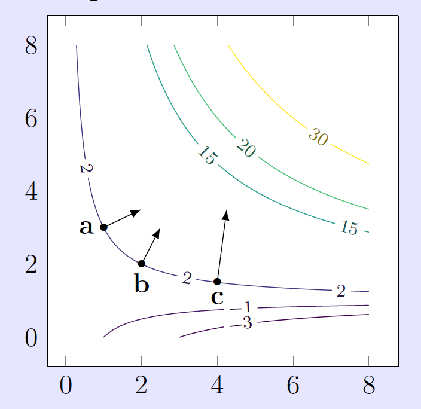
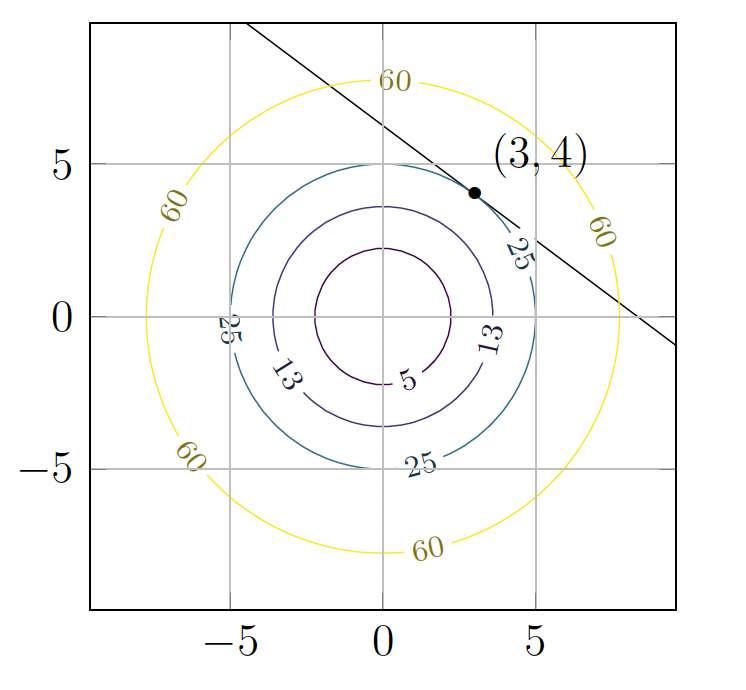
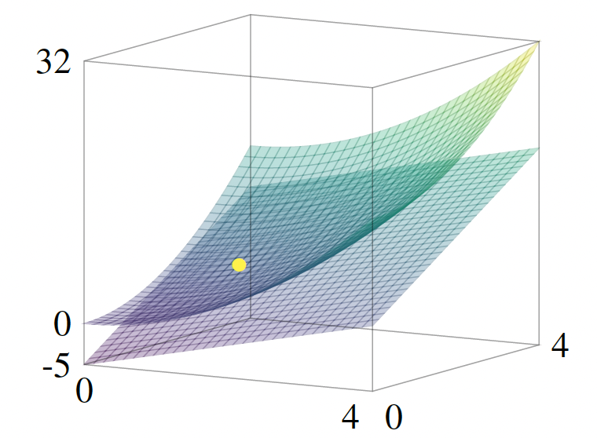
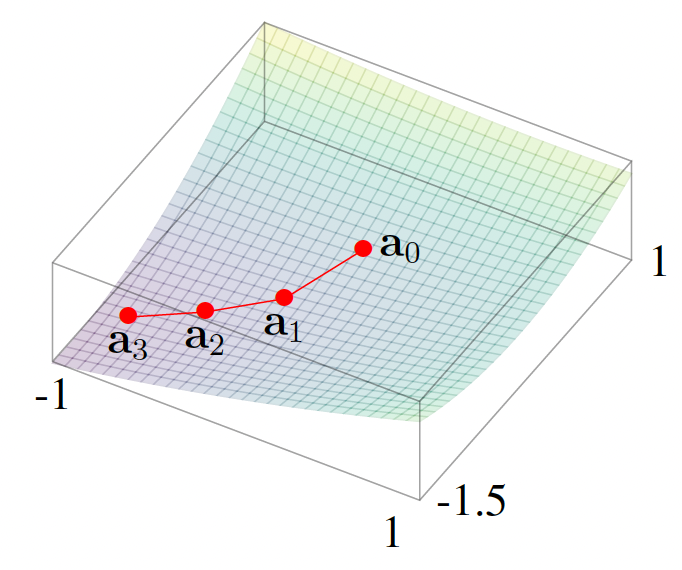
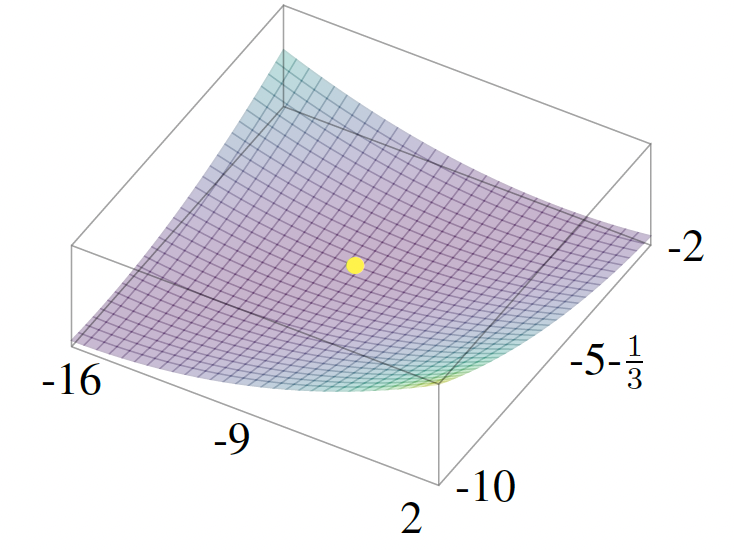

Gradients, local approximations, and gradient descent
The Gradient
For a scalar-valued function \(f : \mathbb{R}^n \to \mathbb{R}\), we now package all of its partial derivatives into a single vector-valued function denoted \(\nabla f : \mathbb{R}^n \to \mathbb{R}^n\) called the gradient of \(f\).
Consider \(f : \mathbb{R}^n \to \mathbb{R}\). We will sometimes write the inputs to \(f\) as vectors. For example, when \(n = 2\) we may think of \(f\) as a function of a column vector \(\begin{pmatrix} x \\ y \end{pmatrix}\) (often written \(f(x,y)\) with the same meaning once we identify \((x,y)\) with that vector).
The gradient of \(f\) is defined to be the column vector of partial derivatives:
Example: Let \(f(x,y) = x^2 + y^2\). Then \(\dfrac{\partial f}{\partial x} = 2x\) and \(\dfrac{\partial f}{\partial y} = 2y\), so
For instance \(\nabla f(1, -2) = \begin{pmatrix} 2 \\ -4 \end{pmatrix}\).
Example: Let \(f(x,y,z) = x^2 + xy + yz^2\). Compute
Hence
The linear approximation for a scalar-valued function
For a function \(f\) of a single variable \(x\), we know that a small change \(h\) in the value of \(x\) near \(x = a\) causes an approximate change of \(f'(a)\,h\) in the value of \(f(x)\) near \(x = a\):
for all \(h\) near \(0\). We can write this in another way: for \(x\) very close to \(x = a\),
which is the same statement of approximation except with \(x\) in place of \(a + h\) (so \(x - a = h\) is small).
Note that the gradient of \(f : \mathbb{R}^n \to \mathbb{R}\) is a vector-valued function \(\nabla f : \mathbb{R}^n \to \mathbb{R}^n\): its value \((\nabla f)(\mathbf{a})\) at \(\mathbf{a} \in \mathbb{R}^n\) is an \(n\)-vector. For \(\mathbf{x}\) near \(\mathbf{a} \in \mathbb{R}^n\), the linear approximation to \(f\) is
Observe that this looks just like the single-variable case except that now there are vectors and a dot product involved. When \(n = 1\) this recovers exactly the familiar single-variable case, with \((\nabla f)(a)\) equal to the \(1\)-vector \([f'(a)] \in \mathbb{R}^1 = \mathbb{R}\).
Let us write it out explicitly in the case of a two-variable function (i.e., \(n = 2\)) without the vector notation:
for \((x, y)\) near \((a, b)\). Here, the underbraced term is exactly \((\nabla f)(\mathbf{a}) \cdot (\mathbf{x} - \mathbf{a})\) with \(\mathbf{a} = (a,b)\) and \(\mathbf{x} = (x,y)\).
We refer to these equations as the local approximation for \(f\) at \(\mathbf{a}\) or as the linear approximation for \(f\) at \(\mathbf{a}\).
Example: Consider \(f(x, y) = x^2 + 2y^2 + xy\) near \(\mathbf{a} = (1, 1)\). Working at \(\mathbf{x} = (1.3, 0.9)\) near \(\mathbf{a}\), let us estimate \(f(1.3, 0.9)\) using the linear approximation with base point \(\mathbf{a} = (1, 1)\).
First compute the partial derivatives:
so
Also \(f(1, 1) = 1 + 2 + 1 = 4\), and \(\mathbf{x} - \mathbf{a} = \begin{pmatrix} 0.3 \\ -0.1 \end{pmatrix}\). Thus
The exact value is \(f(1.3, 0.9) = 4.48\).
The gradient as normal to contours
Theorem:
Let \(f : \mathbb{R}^2 \to \mathbb{R}\) be a scalar-valued function, and suppose \((\nabla f)(a, b) \neq 0\).
(i) The gradient \((\nabla f)(a, b)\) is perpendicular to the level set of \(f\) that goes through \((a, b)\) (equivalently: it is perpendicular to the tangent line to that level set at \((a, b)\)). It points in the direction of maximal increase of \(f(x, y)\) as \((x, y)\) moves away from \((a, b)\). The figure below illustrates this for \(f(x, y) = xy - x\).

A contour plot of \(f(x, y) = xy - x\). The gradient \(\nabla f\) is drawn at three points: \(\mathbf{a} = (1, 3)\), \(\mathbf{b} = (2, 2)\), \(\mathbf{c} = (4, 3/2)\). Observe that \(\nabla f\) is perpendicular to the level curve at each point.
(ii) The equation
in the \((x, y)\)-plane is the line tangent to the level curve of \(f\) through \((x, y) = (a, b)\). Equivalently, writing the dot product out,
Theorem:
For a scalar-valued function \(f : \mathbb{R}^3 \to \mathbb{R}\) and a point \(\mathbf{a} = (a_1, a_2, a_3)\) for which \((\nabla f)(\mathbf{a}) \neq 0\), the gradient vector \((\nabla f)(\mathbf{a})\) is perpendicular to the plane tangent to the level set of \(f\) through \(\mathbf{a}\). In particular, that tangent plane is given by
The same picture carries over to functions \(f : \mathbb{R}^n \to \mathbb{R}\) for \(n > 3\), except that the tangent plane to a level set in \(\mathbb{R}^3\) is replaced by the appropriate tangent hyperplane to a level set \(\{f = c\}\) in \(\mathbb{R}^n\).
Example: Consider the circle defined by \(x^2 + y^2 = 25\). Let us find a normal vector to this circle at \((x, y) = (3, 4)\), as well as the equation of the tangent line at that point. This case can be handled with single-variable calculus (worth trying if you are interested), but we use gradients here to illustrate a method that extends to three or more variables.
Define \(h(x, y) = x^2 + y^2\). Then \(h(3, 4) = 25\) and
A normal vector to the level set \(h = 25\) (our circle) through \((3, 4)\) is the gradient
If \(\begin{pmatrix} x \\ y \end{pmatrix}\) lies on the tangent line, the displacement from \((3, 4)\) to \(\begin{pmatrix} x \\ y \end{pmatrix}\) must be perpendicular to that normal. Thus
i.e.
After simplifying, this becomes \(3x + 4y = 25\), as illustrated below.

Example: Consider the sphere \(S\) given by \(x^2 + y^2 + z^2 = 6\). Let us find an equation for the tangent plane to \(S\) at \((2, 1, 1)\).
\(S\) is the level set \(f = 0\) of
\(f(x, y, z) = x^2 + y^2 + z^2 - 6\) (since \(f = 0\) is equivalent to \(x^2 + y^2 + z^2 = 6\)). Then
As above, this tangent plane is perpendicular to \((\nabla f)(2, 1, 1) = \begin{pmatrix} 4 \\ 2 \\ 2 \end{pmatrix}\), so its equation is
After simplifying, this becomes \(2x + y + z = 6\).
Example: Consider the surface \(S\) defined by \(z = x^2 + y^2\). Let us find the equation of the tangent plane to \(S\) at \((1, 2, 5)\).
We can rewrite the equation as \(x^2 + y^2 - z = 0\). Thus \(S\) is the level set \(f = 0\) of
(since \(f = 0\) is equivalent to \(z = x^2 + y^2\)). The gradient is
Next,
is normal to \(S\) at \((1, 2, 5)\). The tangent plane through that point is therefore given in point–normal form by
This simplifies to \(-2(x - 1) - 4(y - 2) + (z - 5) = 0\), or equivalently
The figure below compares the graph of \(z = x^2 + y^2\) and the tangent plane \(z = 2x + 4y - 5\) at \((1, 2, 5)\).

Gradient descent
One of the main reasons to study calculus of \(n\) variables is to optimize multivariable functions; i.e., to find their local maxima and minima (with the eventual aim of finding global maxima and minima). Realistic problems of this type cannot be solved exactly; rather one needs ways to numerically approximate the answer. A powerful method for doing this is gradient descent.
Example: Imagine that a raindrop falls on a hill. It will head to the bottom– water always finds the lowest elevation. Or at the very least it will find a local minimum: it might not find the bottom of the hill, but it will find a lake half-way down the hill, perhaps. The raindrop certainly doesn’t know anything about the geography of the hill. However, at every moment, it simply “chooses” to roll in the steepest possible direction.
The preceding examples suggest the following strategy, called gradient descent: to find the minimum of a function \(f(x, y)\), move away from \((x, y)\) in the direction in which \(f\) decreases the fastest. Similarly, to find the maximum of \(f(x, y)\), move away from \((x, y)\) in the direction in which \(f\) increases the fastest.
We need to make this mathematically precise. We can quantify direction (without regard to speed) by giving a unit vector \(\mathbf{v} \in \mathbb{R}^2\), i.e., a vector with \(\lVert \mathbf{v} \rVert = 1\). To test how fast \(f\) is increasing or decreasing in the direction of \(\mathbf{v}\), we use the linear approximation with \(t \in \mathbb{R}\) near \(0\):
If we move a small distance \(|t|\) in the direction \(\mathbf{v}\) for \(t > 0\) and in the direction \(-\mathbf{v}\) for \(t < 0\), then the change in \(f\) is approximately \(t\bigl((\nabla f)(\mathbf{a}) \cdot \mathbf{v}\bigr)\), whose rate of change with respect to \(t\) (the \(t\)-derivative of this linear approximation) is \((\nabla f)(\mathbf{a}) \cdot \mathbf{v}\). Thus our question becomes: how do we choose a unit vector \(\mathbf{v}\) so that \((\nabla f)(\mathbf{a}) \cdot \mathbf{v}\) is largest? Then use \(t > 0\) when seeking to maximize \(f\) and \(t < 0\) when seeking to minimize \(f\).
We can solve this by geometry. The dot product \((\nabla f)(\mathbf{a}) \cdot \mathbf{v}\) equals \(\lVert (\nabla f)(\mathbf{a}) \rVert \,\lVert \mathbf{v} \rVert \cos(\theta) = \lVert (\nabla f)(\mathbf{a}) \rVert \cos(\theta)\), where \(\theta\) is the angle between \(\mathbf{v}\) and \((\nabla f)(\mathbf{a})\). This is largest when \(\cos(\theta) = 1\), i.e.\ \(\theta = 0\). It is most negative when \(\cos(\theta) = -1\), i.e.\ \(\theta = \pi\) (a \(180^\circ\) angle).
Theorem: Let \(f : \mathbb{R}^n \to \mathbb{R}\) be differentiable at \(\mathbf{a} \in \mathbb{R}^n\), and suppose \((\nabla f)(\mathbf{a}) \neq \mathbf{0}\). Then the direction of steepest increase of \(f\) at \(\mathbf{a}\) is that of the gradient: the associated unit vector
points in the direction in which \(f\) increases most rapidly at \(\mathbf{a}\). Likewise, the opposite unit vector
is the direction in which \(f\) decreases most rapidly at \(\mathbf{a}\).
Example: Many physical systems can be modeled using the gradient of a function. The idea is that an object experiences a force derived from a potential energy \(V(x, y, z)\) by
For example, the potential energy associated with the gravitational field of the sun can be taken to have the form
for a suitable constant \(c > 0\), where coordinates are chosen so the sun is at \((0, 0, 0)\).
Equation \(\mathbf{F} = -\nabla V\) says that the object experiences a force in the direction in which \(V\) is most rapidly decreasing. In other words, the object “wants” to move toward where \(V\) is smallest.
Domain steps
Gradient descent updates the input \(\mathbf{a} \in \mathbb{R}^n\): each step has the form \(\mathbf{a}_{\text{new}} = \mathbf{a} + (\text{displacement})\), where the displacement is a vector in \(\mathbb{R}^n\).
For \(\mathbf{v}\) a unit vector and \(t\) small, the linear approximation says
The next point is specified separately: you choose a direction \(v\) and step length \(t\) to get \(\mathbf{a}_{\text{new}} = \mathbf{a} + t\mathbf{v}\).
It is often convenient to write the displacement as a multiple of the full gradient instead of a unit direction. The update
is the same idea: the step vector is \(t(\nabla f)(\mathbf{a})\). This is equivalent to \(\mathbf{a} + t\mathbf{v}\) where \(\mathbf{v} = (\nabla f)(\mathbf{a})/\lVert (\nabla f)(\mathbf{a}) \rVert\) and \(t\) is chosen accordingly.
To minimize \(f\), take \(t < 0\), so \(\mathbf{a}_{\text{new}} = \mathbf{a} - |t|\,(\nabla f)(\mathbf{a})\), which is a step opposite to the gradient.
Example:
Let \(f : \mathbb{R}^2 \to \mathbb{R}\) be
Then
We start at some point \(\mathbf{a}\) (hopefully near a minimizer) and repeatedly move in the direction of the negative gradient. One step has the form
with \(t < 0\) when we are minimizing \(f\) (so we move opposite to the direction of steepest ascent). Equivalently, \(\mathbf{a} \mapsto \mathbf{a} - |t|\,(\nabla f)(\mathbf{a})\). The size \(|t|\) controls how far we move at each step.
We must choose:
- Where to start \(\mathbf{a}\). Here we take \(\mathbf{a} = (0, 0)\) with no prior knowledge.
- Step size \(t\). In practice one tries several values (in machine learning, \(|t|\) is often called the learning rate). Here we use the fixed value \(t = -0.1\), so each update is
Starting at \((0, 0)\), the first few iterates are
If we write \(\mathbf{a}_0 = (0,0)\) and \(\mathbf{a}_n = \mathbf{a}_{n-1} - 0.1\,(\nabla f)(\mathbf{a}_{n-1})\), this is the beginning of that sequence. Not much seems to happen at first— the path merely wanders, as in the figure below.

The first few steps of gradient descent for \(f\). The update is \(\mathbf{a}_n = \mathbf{a}_{n-1} - 0.1\,(\nabla f)(\mathbf{a}_{n-1})\).
After \(10\) steps one reaches approximately \(\begin{pmatrix} -7.768 \\ -4.674 \end{pmatrix}\); after \(100\) steps, approximately \(\begin{pmatrix} -8.835 \\ -5.245 \end{pmatrix}\); after \(1000\) steps, approximately \(\begin{pmatrix} -8.999\ldots \\ -5.333\ldots \end{pmatrix}\). The iterates appear to converge toward
To justify this, find critical points by solving \((\nabla f)(x,y) = \mathbf{0}\):
The first equation gives \(x = \frac{3}{2}y - 1\). Substituting into the second yields \(\frac{3}{2}y + 8 = 0\), so \(y = -\frac{16}{3}\) and then \(x = -9\).
Thus \((-9, -16/3)\) is the only critical point. One can check numerically that \(f\) is smaller nearby than at points slightly away to see that it is a local minimum.

Informal proof: the gradient is normal to the contour
\(\nabla f(a, b)\) is perpendicular to the level curve of \(f\) through \((a, b)\). Below is a short argument (not a formal proof).
Fix \((a, b)\) and let \(c = f(a, b)\). If \((x, y)\) lies on the same level curve, then by definition \(f(x, y) = c = f(a, b)\) i.e., the value of \(f\) does not change as you move along the contour.
Now recall the linear approximation from earlier (for \(\mathbf{x}\) near \(\mathbf{a} = (a, b)\)):
Apply this to a point \((x, y)\) that lies on the contour through \((a, b)\) and is close to \((a, b)\). Then \(f(x, y) = f(a, b)\) exactly. Equating the two sides in the approximation forces
So, near \((a, b)\), the contour is well approximated by the set of \((x, y)\) satisfying the linear equation
So near \((a, b)\) the contour curve looks just like the line with equation above. In other words, the above equation must be the equation of the tangent line!
In other words, it is the equation of a line through \((a, b)\) whose direction vectors \(\begin{pmatrix} x - a \\ y - b \end{pmatrix}\) are all orthogonal to \((\nabla f)(a, b)\). In other words, it is the tangent line to the level curve, and \((\nabla f)(a, b)\) is a normal vector to that line. Hence \((\nabla f)(a, b)\) is perpendicular to the level curve of \(f\) through \((a, b)\).
Exercises
1. You ordered a large block of wood with length \(5\), width \(2\), and height \(1\) (each in feet). The manufacturer can only guarantee these measurements up to an excess of at most \(0.1\) feet in each dimension (so each actual dimension lies in an interval of length \(0.1\) above the nominal value). Use a suitable gradient to approximate the largest possible total excess volume. Then compute the exact maximal excess volume.
Solution: Let \(L\), \(W\), and \(H\) denote length, width, and height in feet. The volume is
Nominal dimensions are \((L, W, H) = (5, 2, 1)\), so \(V(5,2,1) = 10\) ft³. The manufacturer may deliver dimensions in the ranges \(L \in [5, 5.1]\), \(W \in [2, 2.1]\), \(H \in [1, 1.1]\). The excess volume over the nominal \(10\) ft³ is
which we want to maximize over that box.
Gradient approximation: The gradient of \(V\) is
At \((5, 2, 1)\),
Write small increases as \(\Delta L\), \(\Delta W\), \(\Delta H\) (each between \(0\) and \(0.1\)). Set \(\mathbf{a} = (5,2,1)\) and \(\mathbf{x} = (5+\Delta L,\, 2+\Delta W,\, 1+\Delta H)\), so the displacement from the nominal dimensions is \(\mathbf{x} - \mathbf{a} = (\Delta L,\, \Delta W,\, \Delta H)^{\mathsf T}\). For any differentiable \(V\), the linear approximation at \(\mathbf{a}\) is
Subtracting \(V(\mathbf{a}) = 10\) from both sides gives the approximate excess volume
All partial derivatives are positive at \((5,2,1)\), so this linear expression is largest when each increment is as large as allowed: \(\Delta L = \Delta W = \Delta H = 0.1\). Thus the approximate maximal excess volume is
Exact maximum: The function \(V = LWH\) has positive partial derivatives on the box (since \(L,W,H > 0\)), so \(V\) is increasing in each variable separately. Hence the maximum of \(V\) on \([5,5.1]\times[2,2.1]\times[1,1.1]\) occurs at: \((L,W,H) = (5.1,\, 2.1,\, 1.1)\). Therefore
and the exact maximal excess volume is